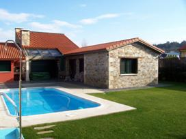
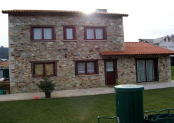
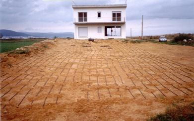
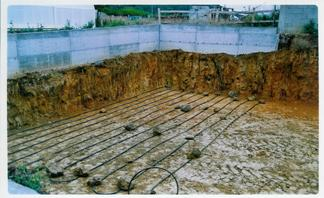
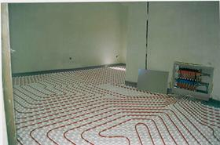

Estas viviendas disponen de sistemas de calefacción y Agua Caliente Sanitaria geotérmica, instaladas por nuestros servicios. En todas ellas se instaló suelo radiante.
Esta vivienda de una planta, de 90m2, se encuentran en A Coruña, se instaló un generador Agua / Agua, con una potencia de 6,5 kW, se optó por un captador horizontal en dos capas, 1,20 y 0,60 m, disimulado en la zona verde. El agua caliente es independiente a la bomba de calor.

Esta, otra, vivienda de dos plantas, de 120m2, se encuentra en A Coruña, se instaló un generador Agua / Agua, con una potencia de 10kW, se optó por un captador horizontal en dos capas, 1,20 y 0,60 m, disimulado en la zona verde. El agua caliente es independiente a la bomba de calor.

Esta, otra, vivienda de dos plantas, de 187m2, se encuentran en San Miguel de Reinante, Lugo, se instaló un generador Agua / Agua, con una potencia de 13kW, se optó por un captador horizontal en una capa, a 0,60 m, véase detalle en la foto. El agua caliente es independiente a la bomba de calor.
 